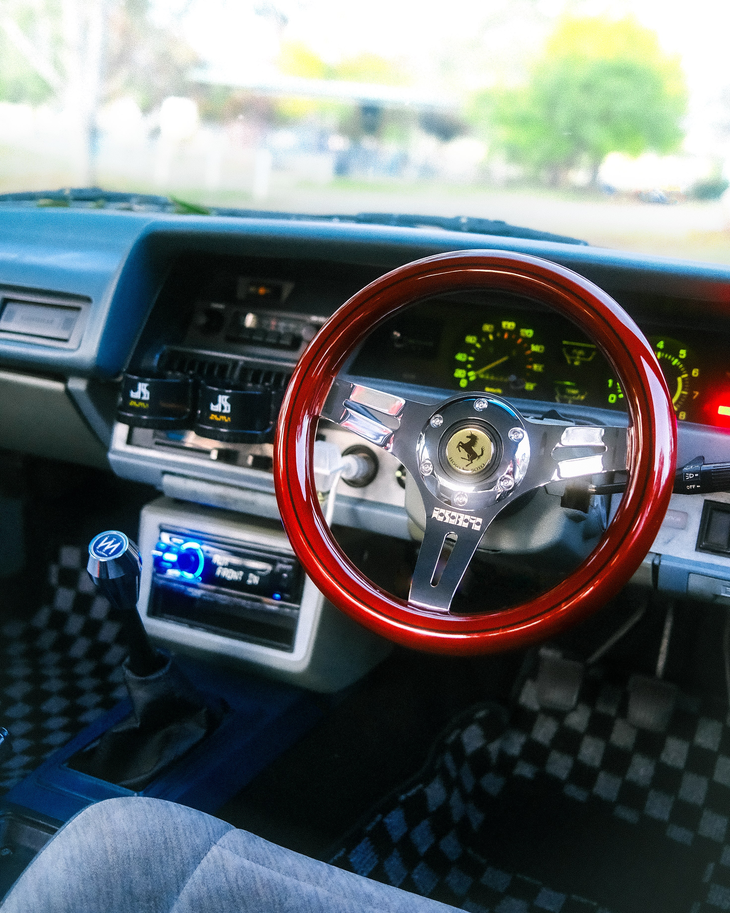

280mm.
2022-present.
Aftermarket steering wheels have been a huge component of car tuning and motorsport for the entire history of the motor vehicle.
The Hoso~Boyo 280mm wood handle wheel fills an incredibly niche market of old-era Japanese style tuning where tiny steering wheels were often used in Bosozoku style builds.
More on this project: https://www.joysupplyjapan.com/product-page/hosoboyo-wood-handle https://www.instagram.com/p/C73hkesSUcC/?img_index=1

Hoso~Boyo 280mm wheel. Chrome steel, peach hardwood.